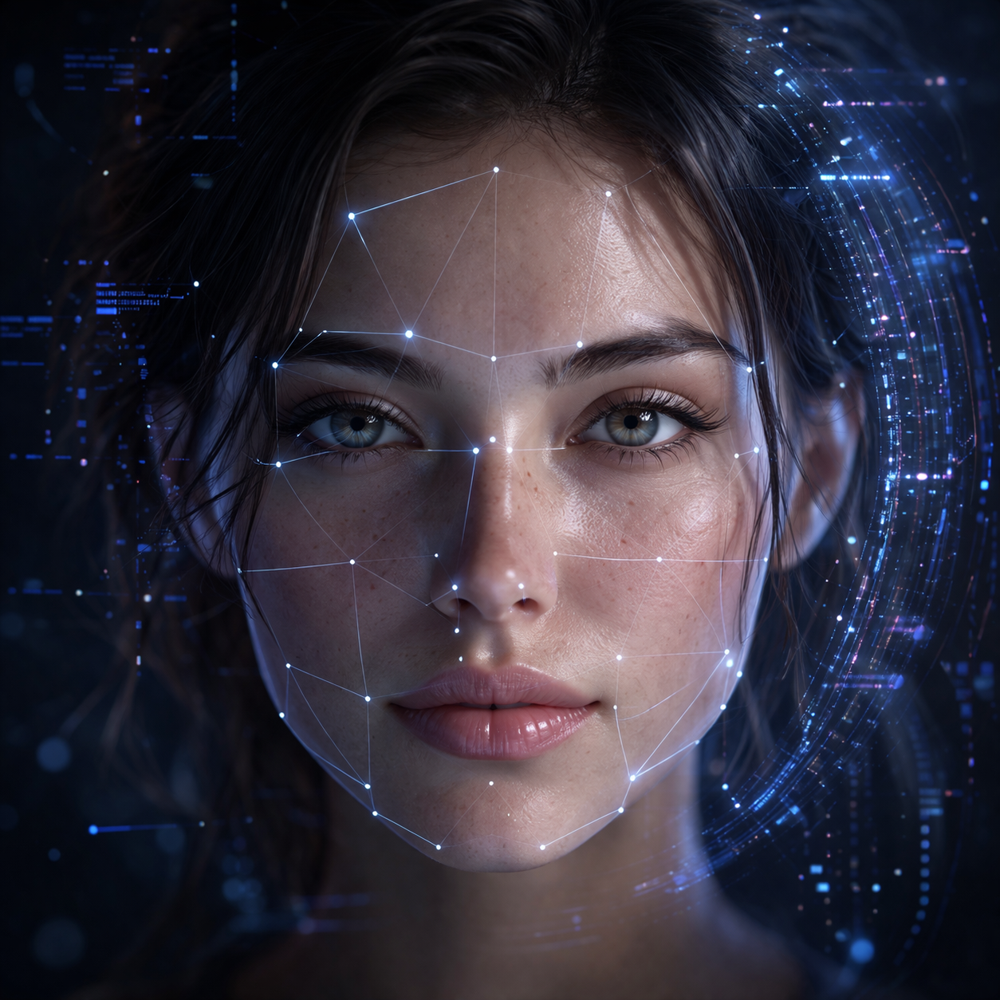

Veille Technologique
Les IA génératives de visages réalistes
Cette veille présente le fonctionnement des intelligences artificielles capables de générer des visages très réalistes, leur évolution, leurs avantages et leurs inconvénients comme les fake news, les deepfakes et l'usurpation d'identité.

veille_status.js
> En cours de préparation